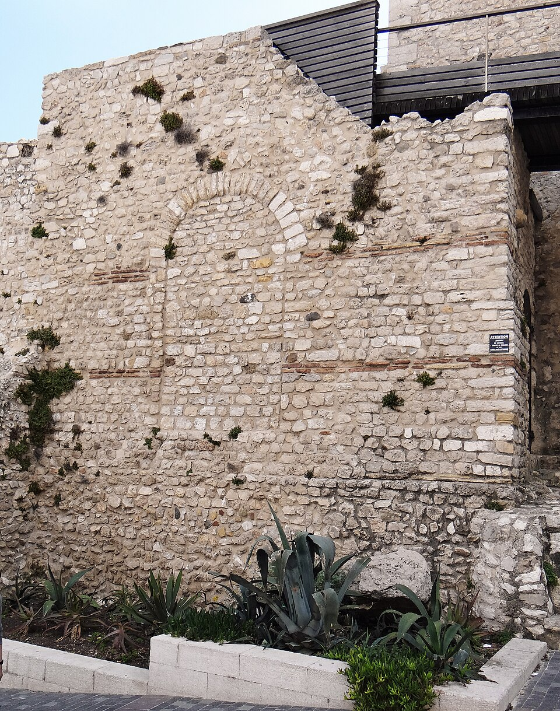

L'ancienne cité grecque et romaine, avec ses remparts maritimes, sa vieille ville et le sentier du littoral du Cap d'Antibes.
À découvrir à Antibes

Sentier du littoral Tirepoil
Gratuit

Musée Picasso d'Antibes
Payant

Location de vélos électriques
Payant